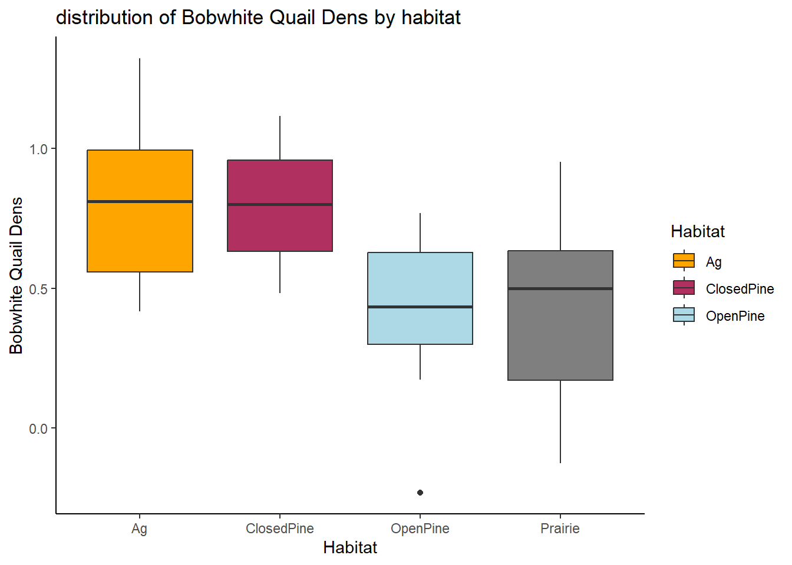

library(tidyr)
library(ggplot2)
library(kableExtra)
library(readr)Assignment 5
Assignment 5: Applying t-test and ANOVA
5-1: Comparing the soil carbon concentration in traditional vs. regenerative agriculture - t-test
datum <- read_csv("~/R/Field_methods/Week 9 Assignments/HW 5-dataset1.csv",
show_col_types = FALSE)
datum %>%
kable(digits = 4) %>%
kable_styling(bootstrap_options = "striped", "hover")| Agriculture.Practice | Carbon |
|---|---|
| Traditional | 8.8575 |
| Traditional | 9.3341 |
| Traditional | 14.9729 |
| Traditional | 10.2046 |
| Traditional | 18.3221 |
| Traditional | 5.1771 |
| Traditional | 12.2556 |
| Traditional | 16.3186 |
| Traditional | 9.8851 |
| Traditional | 11.8626 |
| Regenerative | 9.2675 |
| Regenerative | 14.3923 |
| Regenerative | 16.1429 |
| Regenerative | 13.8928 |
| Regenerative | 10.8236 |
| Regenerative | 11.0546 |
| Regenerative | 9.6174 |
| Regenerative | 13.7621 |
| Regenerative | 20.7822 |
| Regenerative | 12.8872 |
datum %>%
summary() Agriculture.Practice Carbon
Length:20 Min. : 5.177
Class :character 1st Qu.: 9.818
Mode :character Median :12.059
Mean :12.491
3rd Qu.:14.537
Max. :20.782 library(ggplot2)
ggplot(data = datum, aes(x = as.factor(Agriculture.Practice), y = Carbon, fill = as.factor(Agriculture.Practice))) +
geom_boxplot() +
stat_summary(fun = mean, geom = "point", shape = 18, size = 3, color = "black") +
labs(x = "Agriculture Practice", y = "Carbon", fill = "Agriculture Practice", title = "Carbon by Agriculture Practice") +
theme_classic() +
theme(plot.title = element_text(hjust = 0.5))
results=t.test(Carbon~Agriculture.Practice,data=datum,var.equal=FALSE)
results
Welch Two Sample t-test
data: Carbon by Agriculture.Practice
t = 0.93543, df = 17.716, p-value = 0.3621
alternative hypothesis: true difference in means between group Regenerative and group Traditional is not equal to 0
95 percent confidence interval:
-1.926781 5.013289
sample estimates:
mean in group Regenerative mean in group Traditional
13.26227 11.71902 - This model does not find a significant difference between the soil concentration in regenerative vs traditional agricultural practices. 95% confidence interval includes 0 indicating that there is not enough evidence to reject the null hypothesis of no difference in means between the two groups at a significance level of 0.05. ( t=0.9454, p=0.3621)
5-1: Comparing Four Bobwhite Quail Habitat types and population density - ANOVA
datum <- read_csv("~/R/Field_methods/Week 9 Assignments/HW 5-dataset2.csv",
show_col_types = FALSE)
datum %>%
kable() %>%
kable_styling(bootstrap_options = "striped", "hover")| Habitat | QuailDens |
|---|---|
| OpenPine | 0.7686164 |
| OpenPine | 0.3755258 |
| OpenPine | 0.4783116 |
| OpenPine | 0.2734875 |
| OpenPine | -0.2298162 |
| OpenPine | 0.6410679 |
| OpenPine | 0.6477445 |
| OpenPine | 0.5834122 |
| OpenPine | 0.3911914 |
| OpenPine | 0.1736027 |
| Prairie | 0.9505746 |
| Prairie | 0.3453505 |
| Prairie | 0.4096394 |
| Prairie | 0.1139545 |
| Prairie | 0.5892843 |
| Prairie | 0.6438954 |
| Prairie | 0.6047102 |
| Prairie | -0.1246777 |
| Prairie | -0.0994187 |
| Prairie | 0.9385808 |
| ClosedPine | 0.7074961 |
| ClosedPine | 1.0002411 |
| ClosedPine | 0.8447862 |
| ClosedPine | 1.1158863 |
| ClosedPine | 0.8069477 |
| ClosedPine | 0.9938360 |
| ClosedPine | 0.5594187 |
| ClosedPine | 0.6054311 |
| ClosedPine | 0.7930546 |
| ClosedPine | 0.4831482 |
| Ag | 1.1964189 |
| Ag | 1.3222130 |
| Ag | 0.6448635 |
| Ag | 0.8051951 |
| Ag | 0.8160560 |
| Ag | 1.0147876 |
| Ag | 0.5282727 |
| Ag | 0.9329513 |
| Ag | 0.4162897 |
| Ag | 0.4833651 |
datum <- read_csv("~/R/Field_methods/Week 9 Assignments/HW 5-dataset2.csv",
show_col_types = FALSE)
summary(datum) %>%
kable() %>%
kable_styling(bootstrap_options = "striped", "hover")| Habitat | QuailDens | |
|---|---|---|
| Length:40 | Min. :-0.2298 | |
| Class :character | 1st Qu.: 0.4146 | |
| Mode :character | Median : 0.6232 | |
| NA | Mean : 0.6136 | |
| NA | 3rd Qu.: 0.8232 | |
| NA | Max. : 1.3222 |
datum %>%
ggplot(aes(x = Habitat, y = QuailDens, fill = Habitat)) +
geom_boxplot() +
labs(x = "Habitat", y = "Bobwhite Quail Dens", title = "distribution of Bobwhite Quail Dens by habitat") +
scale_fill_manual(values = c("OpenPine" = "lightblue", "ClosedPine" = "maroon", "Prarie" = "darkgreen", "Ag" = "orange")) +
theme_classic()
hypothesis: From this graph, it looks like there will be no significant statistical difference between Agriculture and Closed pine habitats, or between Open Pine and Prairie habitats . However, between these two groups it seems likely that there will be a statistically significant difference in mean population density.
results = aov(QuailDens~as.factor(Habitat), data= datum)
summary(results) Df Sum Sq Mean Sq F value Pr(>F)
as.factor(Habitat) 3 1.449 0.4830 5.261 0.0041 **
Residuals 36 3.305 0.0918
---
Signif. codes: 0 '***' 0.001 '**' 0.01 '*' 0.05 '.' 0.1 ' ' 1TukeyHSD(results) Tukey multiple comparisons of means
95% family-wise confidence level
Fit: aov(formula = QuailDens ~ as.factor(Habitat), data = datum)
$`as.factor(Habitat)`
diff lwr upr p adj
ClosedPine-Ag -0.02501669 -0.3899625 0.33992915 0.9977248
OpenPine-Ag -0.40572691 -0.7706728 -0.04078107 0.0244214
Prairie-Ag -0.37885197 -0.7437978 -0.01390612 0.0393922
OpenPine-ClosedPine -0.38071022 -0.7456561 -0.01576438 0.0381385
Prairie-ClosedPine -0.35383527 -0.7187811 0.01111057 0.0602106
Prairie-OpenPine 0.02687494 -0.3380709 0.39182079 0.9971852OpenPine-Ag: The estimated difference in population density between the OpenPine and Agriculture habitats is -0.41 individuals per hectare, with a 95% confidence interval ranging from -0.77 to -0.04 individuals per hectare (p = 0.02), indicating a statistically significant difference.
Prairie-Ag: The estimated difference in population density between the Prairie and Agriculture habitats is -0.38 individuals per hectare, with a 95% confidence interval ranging from -0.74 to -0.01 individuals per hectare (p = 0.04), indicating a statistically significant difference.
ClosedPine-Ag: The estimated difference in population density between the ClosedPine and Agriculture habitats is -0.03 individuals per hectare, with a 95% confidence interval ranging from -0.39 to 0.34 individuals per hectare (p = 0.99), indicating that there is no statistically significant difference.
OpenPine-ClosedPine: The estimated difference in population density between the OpenPine and ClosedPine habitats is -0.38 individuals per hectare, with a 95% confidence interval ranging from -0.75 to -0.02 individuals per hectare (p = 0.04), indicating a statistically significant difference.
Prairie-ClosedPine: The estimated difference in population density between the Prairie and ClosedPine habitats is -0.35 individuals per hectare, with a 95% confidence interval ranging from -0.72 to 0.01 individuals per hectare (p = 0.06), which is not statistically significant (i.e., p > 0.05).
Prairie-OpenPine: The estimated difference in population density between the Prairie and OpenPine habitats is 0.03 individuals per hectare, with a 95% confidence interval ranging from -0.34 to 0.39 individuals per hectare (p = 0.99), indicating that there is no statistically significant difference.
the hypothesis is partially supported. The comparison between Agriculture and Closed Pine habitats did not show a significant difference in population density, which is consistent with the hypothesis. However, the comparison between Open Pine and Prairie habitats did not show a significant difference in population density, which is not consistent with the hypothesis. In addition, the comparison between Prairie and Closed Pine habitats had a p-value of 0.06, which is marginally above the threshold of 0.05 for statistical significance, suggesting a possible difference in population density that should be further investigated. Therefore, while the hypothesis correctly predicted one comparison, it was not entirely accurate for the other comparisons.